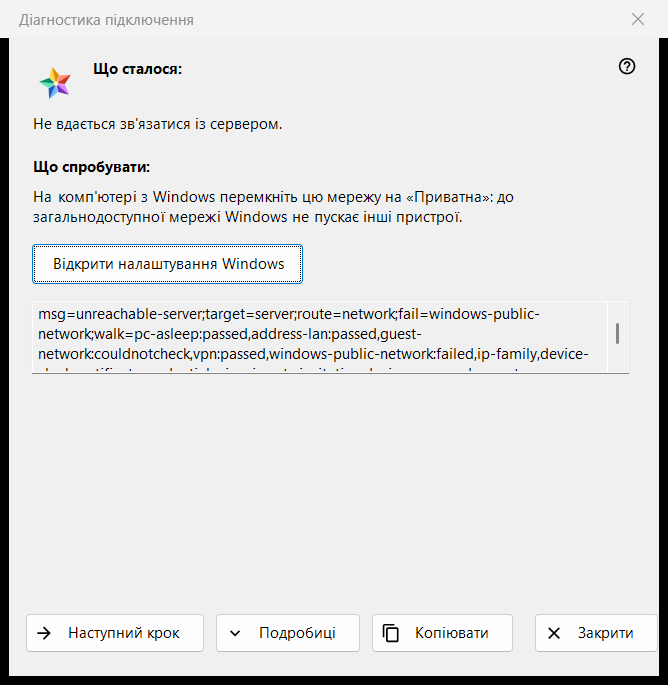
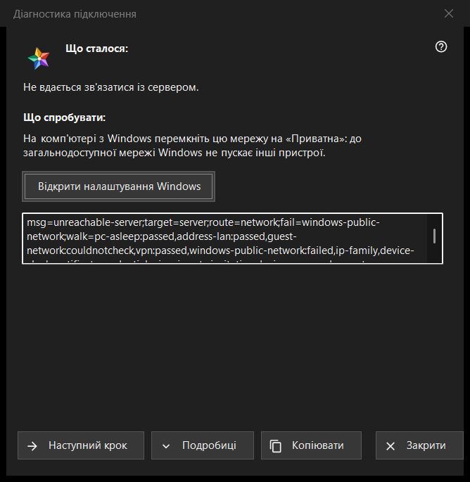

Діагностика підключення
Призначення
Пояснює, чому не вдається зв'язатися із сервером чи пристроєм, і по одному кроку пропонує, що спробувати. Вона не змінює жодного налаштування комп'ютера чи Windows. Вікно відкривається пунктом «Чому не підключається?..» у меню «Ще» списку ресурсів (для вибраного рядка), кнопкою запису сервера в «Мої пристрої», коли запис потребує входу заново, показує зміну сертифіката чи не може підключитися, а також саме - коли ресурс не відкрився.


Порядок дій
- Прочитайте «Що сталося:».
- Спробуйте те, що написано в «Що спробувати:».
- Якщо причина не в цьому, натисніть «Наступний крок».
- Натисніть «Подробиці», якщо потрібні коди, і «Копіювати», щоб передати їх.
- Закрийте вікно.
Елементи вікна
Що сталося
Одна фраза про збій, наприклад «Не вдається зв'язатися із сервером.», «Логін або пароль неправильні.» чи «Цей сервер не схожий на той, до якого ви підключалися раніше.». Вона залежить від виду збою, через який відкрилося вікно.
Що спробувати
Вікно починається з першого кроку, на якому перевірка знайшла негаразд, а якщо такого немає - з першого кроку списку. Типові кроки: розбудити пристрій, на якому працює сервер; переконатися, що обидва пристрої в одній мережі; вийти з гостьової мережі Wi-Fi; ненадовго вимкнути VPN; перемкнути мережу Windows на «Приватна»; перевірити сервер з іншої мережі; встановити правильні дату й час; підтвердити новий відбиток; заново ввести логін і пароль. Останній крок каже, що виправити це може лише той, хто керує сервером.
Наступний крок і налаштування Windows
«Наступний крок» переходить по кроках і зникає на останньому. Для двох кроків, які розв'язуються в налаштуваннях Windows (профіль мережі й годинник), кнопка «Відкрити налаштування Windows» відкриває потрібну сторінку Windows; сама програма нічого не змінює.
Подробиці і «Копіювати»
«Подробиці» показують або ховають поле, яке не редагується, з кодами діагностики: вид збою, ціль, маршрут, крок із негараздом і пройдені кроки. У ньому ніколи немає адреси, логіна, пароля чи відбитка. «Копіювати» кладе цей рядок у буфер, і вікно повідомляє «Коди діагностики скопійовано в буфер обміну.»
Як працює перевірка
Перевірка виконується лише для підключення, яке ви намагалися встановити, і лише читає: вона пробує досягти хоста й порту та дивиться стан мережі, адаптери VPN, профіль мережі Windows, вид адреси, годинник і сертифікат. Вона зупиняється на першому кроці з негараздом, а перевірка, яку не вдалося виконати, ніколи не вважається ні пройденою, ні проваленою.